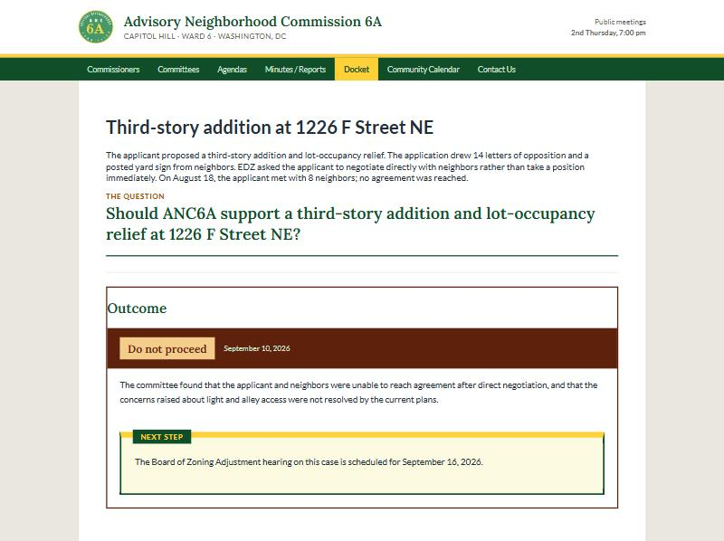

Close the loop on public comment.
Public Docket gives your organization one place to post the items before a board, gather what residents think, and publish what the board actually did. Every comment gets an answer people can see.
The demo builds a complete WordPress site inside your browser tab. Nothing to install, nothing to sign up for.

Comment goes in. Silence comes out.
Residents testify, email, and fill out forms, then rarely hear what happened next. Public Docket makes the response part of the public record, right beside the comments that shaped it.
Upload the agenda. Get a draft docket.
Hand it the agenda or minutes you already write, and it drafts the items for you — case numbers, addresses, and a plain question for residents. Nothing goes live until a person ticks the box.
- Quotes its source. Every item shows the sentence it came from.
- Tracks cases over time. A later agenda updates the item instead of duplicating it.
- Flags contradictions. When two documents disagree, it says so and leaves the choice to you.

Three steps, every item, out in the open.
Post the docket
Add every item coming before your board, from votes to updates to open questions, each in its own drawer residents can browse.
Gather comment
Residents weigh in right on the item. Staff group submissions into themes so the board sees what people are actually saying.
Publish the response
Record the outcome and the reasoning. Residents see what was decided and how their input figured in.
Made for the way boards really work.
A whole docket at once
Run many items side by side instead of one feedback form per issue.
Outcomes you define
Set your own response options to match your process. Not every item ends in a vote.
One Workspace for staff
Items, themes, and submissions on a single admin screen, not scattered across menus.
Comments grouped by theme
Turn a pile of submissions into clear points the board can respond to.
Lives on your own site
Install it on the WordPress site you already run. Your data stays with you.
Drafts items from your documents
A companion plugin reads an agenda and drafts the docket, quoting its source. See it above.
Hand it to a board. Watch the loop close.
If you support neighborhood commissions, advisory boards, or community coalitions, Public Docket is a tool you can deploy for them on infrastructure they already understand, then customize, brand, and build on.
Bring Public Docket to your community.
Explore the demo, install the plugin, or join the project.
New to it? Start with the step-by-step guide.